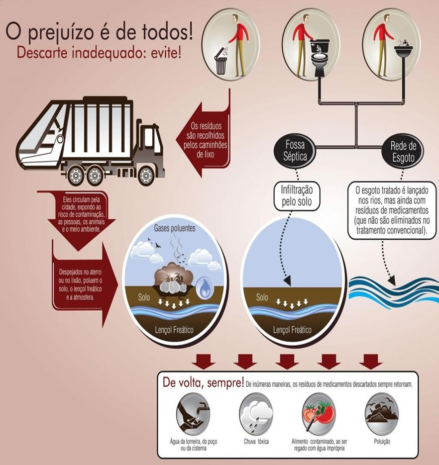
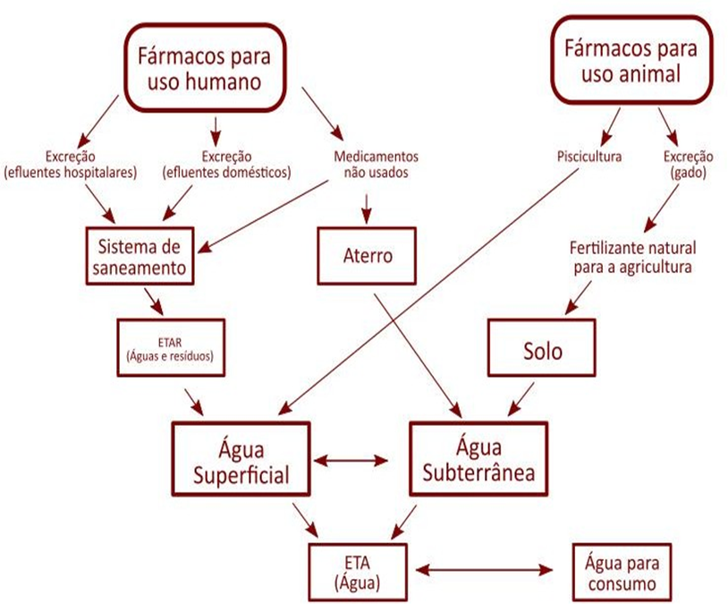

Introdução
descarte incorreto de medicamentos em desuso é classificado pela ANVISA como um risco químico do Grupo B, gerando sérios impactos na saúde pública e no equilíbrio ecológico. O Brasil está entre os dez maiores mercados consumidores de medicamentos do mundo. Como consequência, estima-se que a população descarte anualmente entre 10 mil e 20 mil toneladas de remédios de forma residencial, sendo que cerca de 64% desse total vai parar diretamente no lixo doméstico ou na rede de esgoto comum.
Quando descartadas na pia, no vaso sanitário ou no lixo comum, as substâncias ativas alcançam matrizes ambientais terrestres e aquáticas. As Estações de Tratamento de Esgoto (ETEs) convencionais não possuem barreiras tecnológicas projetadas para filtrar ou degradar compostos moleculares farmacêuticos complexos.
Estudos ecológicos e sanitários revelam a gravidade dessa contaminação através de dados críticos:
- Fator de Poluição Hídrica: Estatísticas técnicas da engenharia ambiental apontam que apenas 1 kg de medicamento descartado via esgoto pode contaminar até 450 mil litros de água.
- Desregulação Endócrina: Fármacos como hormônios sintéticos (provenientes de pílulas anticoncepcionais) são altamente persistentes na água. Mesmo em concentrações ínfimas de nanogramas por litro, eles alteram o sistema reprodutivo e causam a feminização de populações de peixes.
- Resistência Antimicrobiana (RAM): A presença constante de resíduos de antibióticos em rios e sedimentos estimula mutações bacterianas. Esse fenômeno acelera globalmente o surgimento de superbactérias resistentes a tratamentos hospitalares.
- Bioacumulação e Saúde Pública: Os resíduos químicos acumulados nos solos e nos lençóis freáticos infiltram-se na cadeia alimentar através da irrigação agrícola e da fauna. Eventualmente, essas substâncias retornam aos seres humanos a longo prazo por meio do consumo de água e alimentos.
Para conter esse cenário mitigado por dados da Fundação Ezequiel Dias (Funed), o caminho científico aponta para a urgência da Logística Reversa obrigatória. É a partir daqui que nossos três pilares se conectam:
precisamos de tecnologia para rastrear a cadeia de descarte, educação para conscientizar a população que ainda joga remédios no lixo, e sustentabilidade para garantir que a cura humana não represente o envenenamento da Terra.
🍃 Como o Ecossistema Digere os Medicamentos
O meio ambiente não possui mecanismos biológicos capazes de degradar substâncias
sintéticas complexas de forma rápida. Como os medicamentos são desenvolvidos em
laboratório para resistirem ao metabolismo do corpo humano, eles também resistem à ação
da natureza. Esses compostos químicos altamente persistentes acumulam-se na água e no solo
por décadas, acumulando-se ao longo da cadeia alimentar e afetando microrganismos e animais que
nunca deveriam ter contato com tais substâncias.
💧 Como Ocorre a Contaminação
A mecânica da contaminação acontece por duas vias principais: o solo e a água.
Quando descartados no lixo comum, os remédios vão para lixões e aterros, onde a chuva
dissolve os comprimidos e cria um chorume tóxico que penetra profundamente na terra até
atingir os lençóis freáticos. Já quando são jogados na privada ou no ralo, os componentes
químicos chegam aos rios por meio do esgoto doméstico, já que as estações de tratamento convencionais
limpam apenas matéria orgânica e não conseguem filtrar ou neutralizar resíduos químicos.
Diagrama: Fluxo de Contaminação

“Caminho” dos medicamentos descartados inadequadamente até o solo, o lençol freático e a atmosfera"

"fluxograma do percursos dos resíduos descartados"